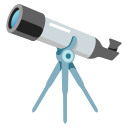

Håll muspekaren över Matematik. På mobil och surfplatta går det en gång när kortet kommer i bild, och igen när du trycker på ikonen.

RymdlabbetPlaneterna, stjärnorna, årstiderna och svarta hålÖvriga kort är som de ser ut nu, bara för jämförelse.